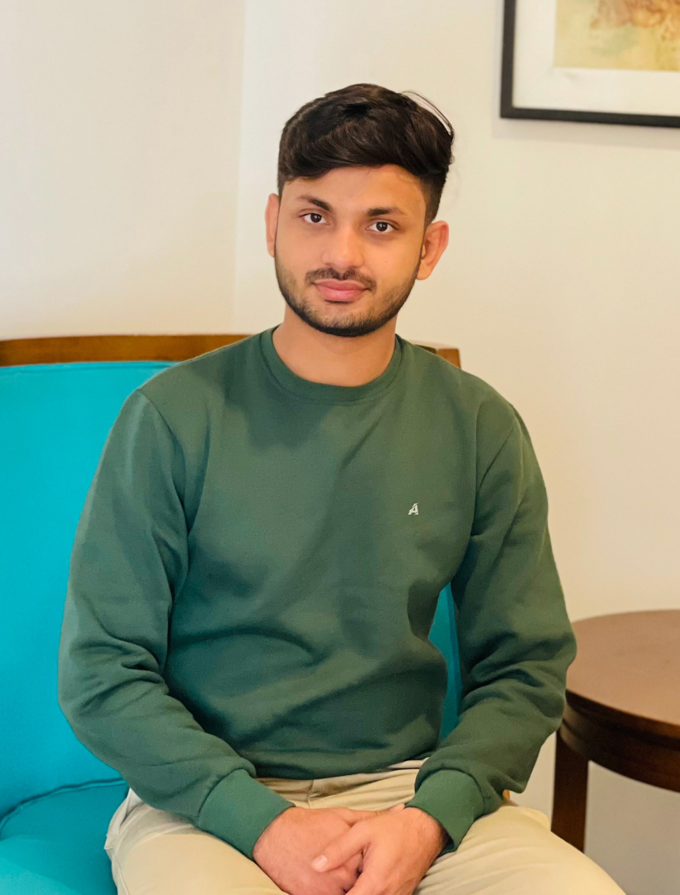

Coverage Strategy
Translate requirements into test plans, test cases, and end-to-end coverage for web and mobile releases.
Software QA Engineer at Tkxel
I help teams ship reliable web and mobile products through manual testing, automation, API validation, and precise defect reporting.

Currently: Software Quality Assurance Engineer at Tkxel, focused on test plans, regression suites, automation coverage, and stakeholder-ready quality reporting.
About
I am a Software Quality Assurance Engineer with hands-on experience across manual testing, regression, smoke, integration, API, and automation workflows. My work is centered on clear coverage, early defect discovery, and practical reporting that helps product teams move faster.
I bring a GIKI engineering background, TCF roots, and a strong habit of turning feedback into better process. I enjoy working with developers, project managers, and client teams to turn requirements into tested, dependable user experiences.
Portfolio Highlights
Translate requirements into test plans, test cases, and end-to-end coverage for web and mobile releases.
Build and maintain Cypress and Playwright coverage for repeatable flows and faster regression confidence.
Log, track, verify, and report issues in Jira with clear reproduction paths and business impact context.
Use Postman and JMeter to validate integrations, response behavior, and reliability signals beyond the UI.
Experience
Tkxel - Lahore, Pakistan
Tkxel - Lahore, Pakistan
K-Electric Generation Department Intern, July 2021 - August 2021.
Teaching Assistant at TCF College Qayyumabad, June 2019 - August 2019.
Skills
Education
Ghulam Ishaq Khan Institute of Engineering Sciences and Technology, CGPA 3.46
The Citizens Foundation College, Grade A-one
TCF School, BGP-II Campus
Credentials
10Pearls University
10Pearls University
Postman
DeepLearning.AI, LinkedIn listed credential, and Aspire Institute
Recognized for academic performance and core values including leadership, integrity, and perseverance.
Contact
Available for QA collaboration, automation work, product testing conversations, and professional networking.